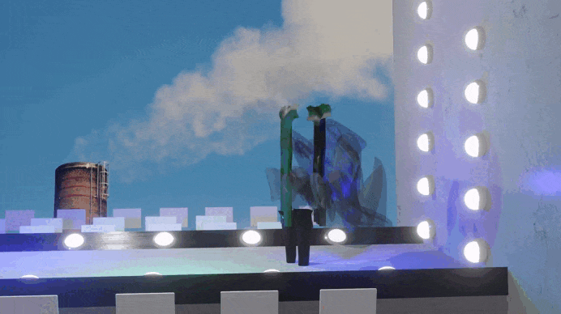
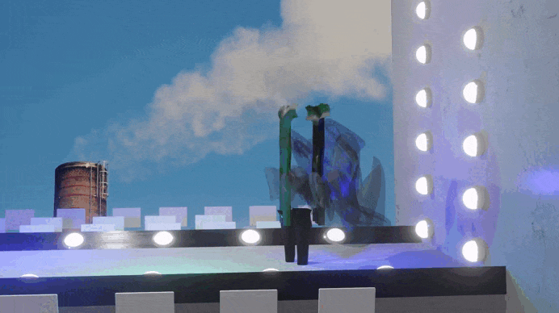
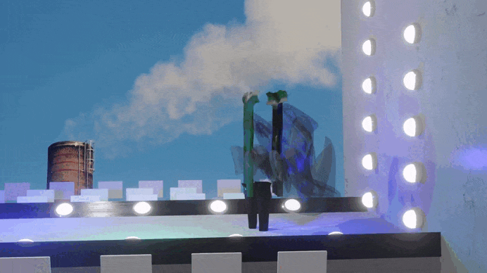

2021 // Animación 3D

Fashionable to, creado a partir de un juego de palabras y pensado como "la moda es capaz de", nace como una crítica hacia la industria del fast fashion a través de una "pasarela virtual" en la cual los diseños están conceptualizados para representar tres problemas de esta industria: la explotación laboral, la contaminación y uso excesivo del agua y la emisión constante y basta de dióxido de carbono.
Esta obra existe en Instagram como una protesta a que las redes sociales e influencers incitan a consumir de estas empresas de moda rápida, además de contribuir a los estereotipos femeninos y propagar estándares inalcanzables. Realicé los modelados 3D en Blender y se obtuvo como producto tres distintos conjuntos modelados en la pasarela virtual.
Mira la obra completa
aquí